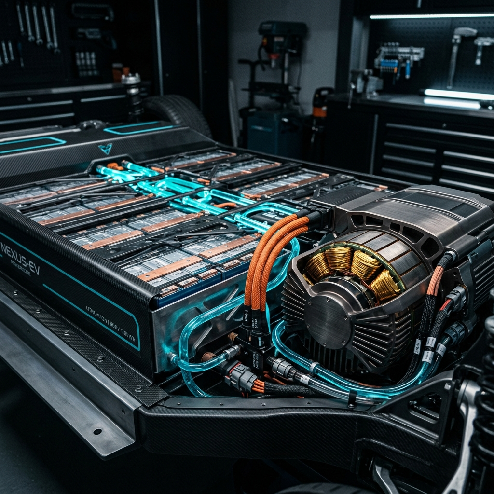

The Powertrain

Our proprietary Flux-Density Engine marks a departure from standard AC induction motors. Developed alongside FIA engineers, it produces unparalleled torque.
電 (Electricity) is managed via our Hyperflow
architecture.
- Battery Chemistry
- Solid-State Lithium-Ceramic (x = 0.5)
- Output
- 2,100 Horsepower (1,566 kW)
Telemetry Integration
Developers can access live telemetry using the aurum-os SDK:
import aurum
car = aurum.connect('VIN_12345')
print(car.get_battery_status())
Use Ctrl + C to terminate the serial connection.